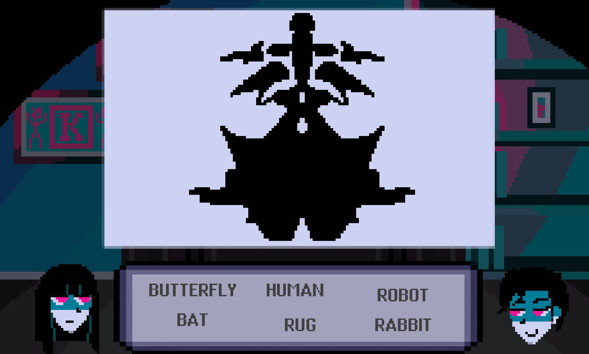
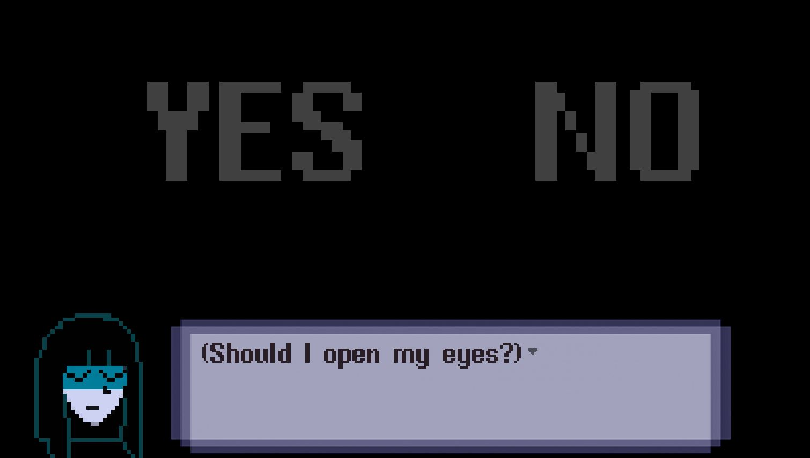
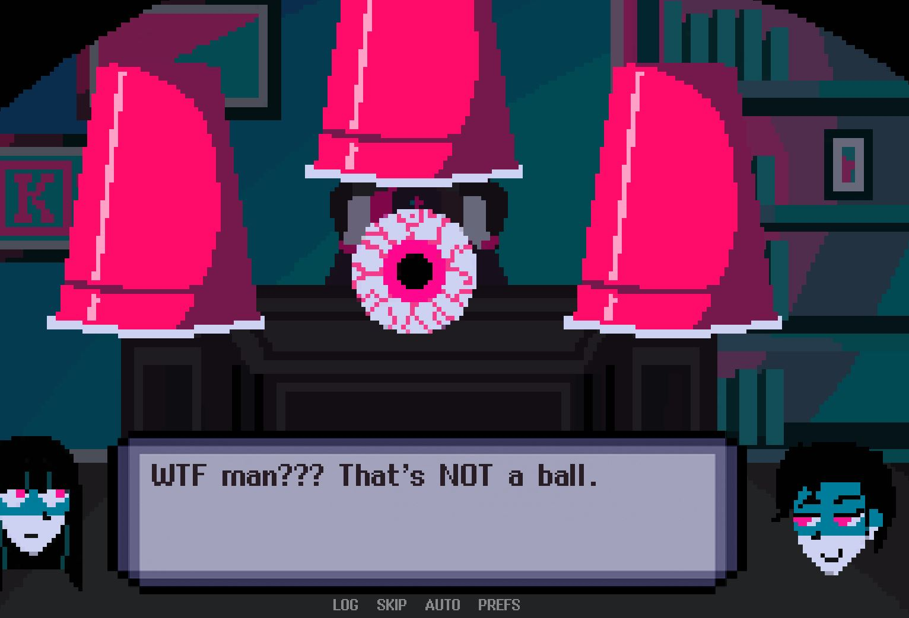
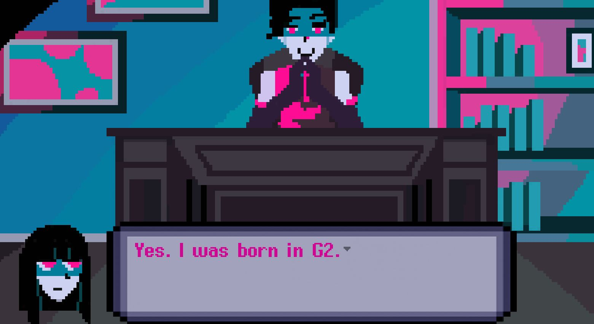
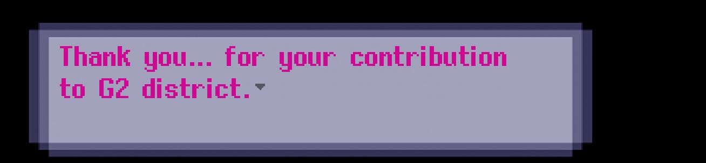
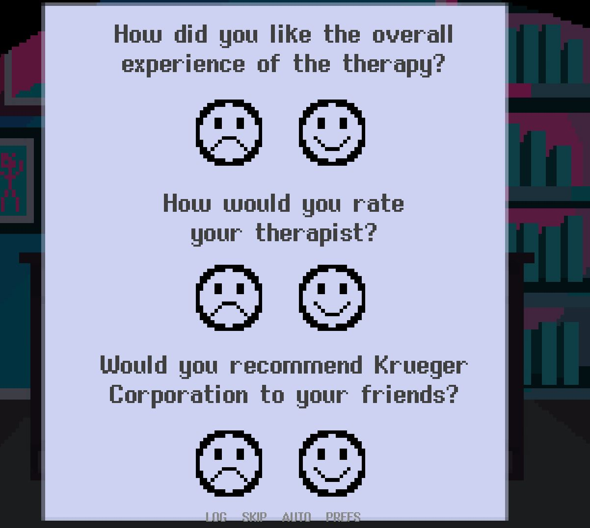

Therapy with Dr. Kueger is an interactive story game. While the dialog is predetermined,
we do have the option to make selections during the testing modes. You get to play as
Taylor, a 19-year-old college student who has been selected to be Dr. Kueger’s latest
patient, in what he calls ‘Dream Therapy’. Dr. Kuegar who has a degree in Marine
Biology, seems to be ill equipped to be a therapist. None the less he will be treating
Taylor at a family run mental facility.Taylor is subject to several weird tests, some of
which include human body parts. Taylor is being tested on basic math and her listening
skills. Will Taylor survive the strange testing?
This is our very first look at the Doctor. Taylor has just become
conscious. It is unclear how she ended up with Doctor Kueger. She is just as
confused as we are. After brief introductions, the doctor tells Taylor they will
be doing a series of test. The first of the testing. Answering basic math questions. Getting them
right the Doctor just tells you, you did a great job. However, when answering
wrong the Doctor doesn't get mad. He will sometimes say "oh so close" or "not
quite" Nothing seems to change when you answer multiple in a row wrong. You do
get to reanswer if you answer wrong the first time. During the test, one of the
cards becomes covered in blood. The doctor quickly replaces it with a new card.
When Taylor asks what happened, he ignores her and continues with more math
questions. 
The ink blot test are by far the hardest of the testing. All of the
images are super abstract. They don't seem to look like any of the answer
choices. The answer choices are the same on all of the images. You are allowed
to flip the ink images over, but the doctor asks you why and you are asked to
turn them over. Halfway through the testing, while hovering over the answer
choices they start to change. The now flashing answer choices say words in pink
lettering such as "murder" "blood". This is clearly freaking Taylor out and she
asks what's going on. Again the doctor just ignores her. 




.JPG)